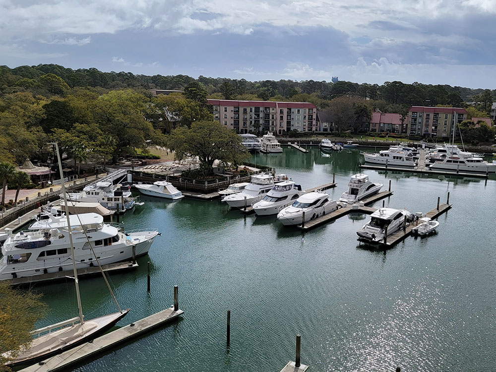
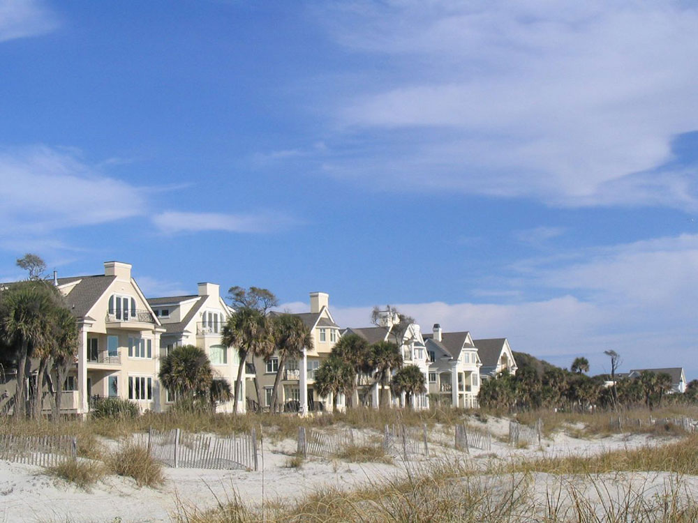
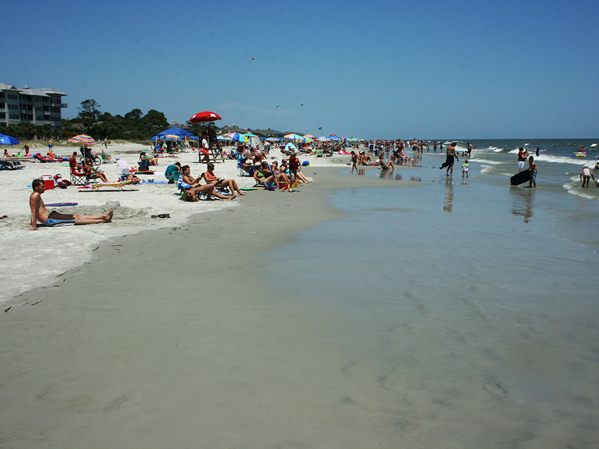
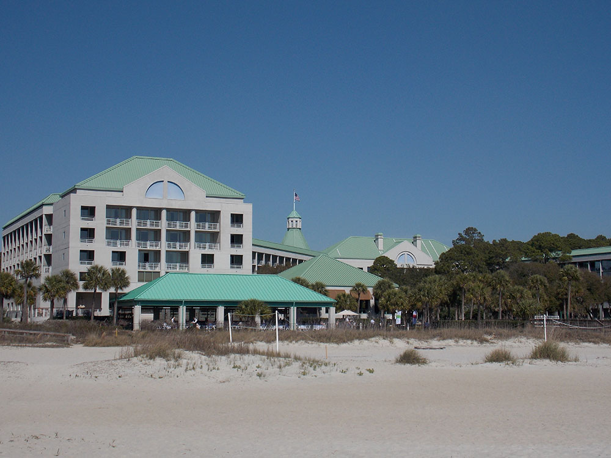

Resort-oriented barrier island featuring Atlantic beaches, golf courses, maritime forests, nature preserves, and an extensive network of recreational trails.
General Information
Public areas, beaches, and outdoor spaces accessible year-round
Individual attractions, tours, and activities priced separately
How to Get There
From Charleston, SC (≈95 mi): Take US‑17 S or I‑26 W to I‑95 S, then exit onto US‑278 E and follow it across the bridge directly onto the island.
Overview
Hilton Head Island is a resort island on the South Carolina coast, between Savannah and Charleston, known for its 12 miles of wide, hard-packed beaches, its world-class golf, its bike paths, and its carefully planned, nature-friendly development, with buildings hidden among live oaks and pines. The island's gated "plantations," such as Sea Pines and Palmetto Dunes, are known for their golf courses and tennis, and the island hosts the RBC Heritage PGA Tour golf tournament each April. It is a popular destination for families, golfers, and retirees.
Visitors come to Hilton Head Island for the beaches, for golf at Harbour Town and the many other courses, and for biking on the island's 60 miles of paved paths. They also come for the Harbour Town Lighthouse, for the Coastal Discovery Museum, for fishing and dolphin cruises, and for fresh seafood, and the Gullah heritage of the island is celebrated in tours and events.
History
The island was home to Native Americans for thousands of years, and it is named for Captain William Hilton, an English sea captain who sighted the headland in 1663. In 1861, Union forces captured the island, and it became a refuge for formerly enslaved people, who established the Gullah community of Mitchelville, one of the first freedmen's towns in the country. After the war, the island was largely rural and isolated until a bridge opened in 1956 and Charles Fraser began to develop Sea Pines Plantation as a planned resort community. The town was incorporated in 1983 and has since grown into one of the most popular resorts on the East Coast.
Sightseeing and Popular Landmarks
The Harbour Town Lighthouse, with its red-and-white stripes, is a symbol of the island and stands over the Harbour Town Golf Links and the yacht basin in Sea Pines. The Coastal Discovery Museum at Honey Horn has exhibits on island history and nature, and the Historic Mitchelville Freedom Park tells the story of the Gullah freedmen's town. Coligny Beach Park has shops and restaurants near the beach, and the Salt Marsh and Pinckney Island National Wildlife Refuge are good for nature viewing.
Culture and Museums
The Coastal Discovery Museum is a Smithsonian affiliate with exhibits on the island's natural and cultural history, and the Historic Mitchelville Freedom Park explores African American history. The Arts Center of Coastal Carolina hosts concerts and plays, and the Hilton Head Island Concours d'Elegance, held each fall, shows vintage cars. The Gullah culture is celebrated in tours, food, and the annual Gullah Celebration in February.
Parks
The island's beaches are the biggest attraction, with Coligny Beach and Burkes Beach popular for walking and swimming, and Fish Haul Beach and Mitchelville are at the north end. Pinckney Island National Wildlife Refuge has trails for walking and biking through marsh and woods, and Sea Pines Forest Preserve has a trail and a Native American shell ring. Dolphin watching tours, kayaking in the salt marsh, and fishing charters are popular.
Seasons and Weather
Hilton Head Island has a humid subtropical climate. Summers are hot and humid, with highs in the upper 80s°F, and winters are mild, with highs in the 50s°F and almost no snow. Spring and fall are the most pleasant seasons, and the beach season runs from May to September. Hurricane season runs from June to November.
Things to Do
Relax on World-Famous Beaches
More than 12 miles of Atlantic coastline offer swimming, sunbathing, beachcombing, and paddleboarding on some of the most scenic beaches in South Carolina.
Explore the Island by Bike
More than 60 miles of paved multi-use pathways connect beaches, parks, shopping districts, and natural areas, making biking one of the easiest ways to get around.
Visit Harbour Town and the Iconic Lighthouse
The famous red-and-white Harbour Town Lighthouse anchors a waterfront of shops, restaurants, and marina views. Climb to the top for views of Calibogue Sound and Daufuskie Island.
Take a Wildlife or Dolphin Tour
Beaches, salt marshes, lagoons, and maritime forests support dolphins, sea turtles, alligators, and shorebirds. Eco-tours, dolphin cruises, and kayaking excursions run throughout the year.
Play Golf and Experience Resort Recreation
The island is internationally known for its championship golf courses, several designed by renowned architects, plus tennis, pickleball, and boating.
Top Trails
Sea Pines Forest Preserve Trail System
Distance: Variable
Difficulty: Easy
Highlights: Forests, wetlands, boardwalks, and lakes inside Sea Pines Resort, with historic sites and wildflower habitat along the way.
Hilton Head Island Beach Walking Route
Distance: Up to 12 miles
Difficulty: Easy
Highlights: Continuous shoreline with ocean views, sunrise walks, and access to several of the island's most popular beaches.
Jarvis Creek Park Trail
Distance: 1.5-mile loop
Difficulty: Easy
Highlights: A family-friendly loop around a scenic lake through wooded areas.
Audubon Newhall Preserve Trail
Distance: 1-mile loop
Difficulty: Easy
Highlights: A short, quiet walk through maritime forest away from the island's busier attractions.
This article uses material from Wikipedia as well as information from official tourism and institutional sources. Key references include Hilton Head Island Visitor & Convention Bureau, Coastal Discovery Museum, RBC Heritage, Discover South Carolina, and National Weather Service Charleston. Wikipedia material is from the articles "Hilton Head Island, South Carolina" and "Mitchelville", and is available under the Creative Commons Attribution-Share-Alike License 3.0.







